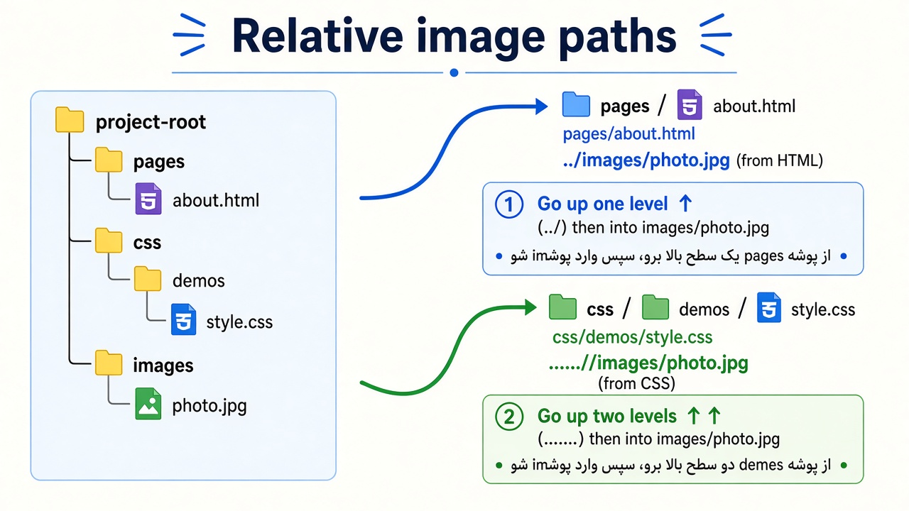

۲) مسیر فایل تصویر — کامل و تصویری
وقتی مینویسید src="..." یا url("...")، مرورگر از یک نقطه شروع میکند و قدمقدم
داخل پوشهها میرود تا به فایل عکس برسد.
اگر نقطهٔ شروع را اشتباه بگیرید، عکس نمیآید؛ حتی اگر فایل واقعاً روی هارد باشد و نامش را درست نوشته باشید.
مرورگر مسیر نسبی را از محل همان فایلی حساب میکند که آدرس داخل آن نوشته شده، نه از پوشهای که شما در ذهنتان «ریشهٔ پروژه» میدانید.
قانون طلایی: مسیر در HTML نسبت به همان فایل HTML است. مسیر در CSS نسبت به همان فایل CSS است — نه نسبت به HTML.
۱) اول ساختار پروژه را ببینید
قبل از نوشتن مسیر، باید بدانید فایل HTML و فایل CSS هر کدام در کدام پوشه نشستهاند.
درخت زیر همان چیدمان این دوره است: صفحهٔ فعلی داخل pages است، فایلهای نمایش داخل css/demos هستند و عکسها در images، همسطح با آن دو پوشه.
۲) دیاگرام مسیر: HTML در برابر CSS
دیاگرام زیر همان مسیر را از دو مبدأ جدا نشان میدهد. فلش آبی از فایل HTML حرکت میکند و فلش سبز از فایل CSS. هر دو به یک عکس میرسند، اما چون فایل CSS یک پوشه عمیقتر است، تعداد ../ در دو مسیر یکی نیست.

../ فرق دارد.
۳) معنی علامتهای مسیر
| نوشتن | معنی | مثال ذهنی |
|---|---|---|
images/a.jpg |
برو داخل پوشه همسطح | «از همینجا وارد images شو» |
./images/a.jpg |
دقیقاً مثل بالا (از همین پوشه) | نقطه یعنی «همینجا» |
../images/a.jpg |
یک پوشه بالاتر، بعد images | «برو بیرون، بعد وارد images» |
../../images/a.jpg |
دو پوشه بالاتر، بعد images | «دو پله برو بالا، بعد images» |
/images/a.jpg |
از ریشه سایت/دامنه |
روی سرور درست کار میکند؛ اما اگر HTML را مستقیم از روی هارد باز کنید، «ریشه» یعنی ریشه درایو
(مثلاً C:/images/a.jpg) و عکس نمیآید
|
https://example.com/a.jpg |
آدرس کامل (مطلق) | برای عکسی که روی سایت دیگری است؛ مستقل از محل فایل HTML/CSS |
۴) پیادهروی مسیر از صفحه فعلی (HTML)
این صفحه خودش داخل پوشهٔ pages است و عکس هدف images/profile.jpg است. مرورگر از پوشهٔ فایل HTML شروع میکند، نه از ریشهٔ پروژه، برای همین مسیر باید اول یک پوشه بالا برود.
شروع از فایل HTML
مرورگر از پوشهٔ همان فایل HTML شروع میکند، یعنی pages/، نه از ریشهٔ پروژه. هر بخش مسیر را نسبت به همین نقطه میخواند.
یک پله بالا با ../
علامت ../ یعنی «یک پوشه بالاتر برو». با این قدم از pages/ بیرون میآیید و به ریشهٔ پروژه میرسید، جایی که پوشهٔ images کنار pages نشسته است.
ورود به images/
از ریشه وارد پوشهٔ images میشوید و به فایل میرسید. مسیر کامل نسبت به این صفحه میشود ../images/profile.jpg.
<img src="../images/profile.jpg" alt="پروفایل">نتیجه درست:

۵) پیادهروی مسیر از فایل CSS
فایل css/demos/hero.css داخل دو پوشهٔ تودرتو است، پس از ریشهٔ پروژه دو سطح پایینتر است.
برای رسیدن به images باید دو بار به پوشهٔ والد برگردد و بعد وارد images شود.
/* فایل: css/demos/hero.css */
.hero {
background-image: url("../../images/hero.jpg");
}از HTML (pages/)
از pages فقط یک پوشه تا ریشه فاصله است، پس یک ../ کافی است و بعد نام images میآید.
../images/hero.jpgاز CSS (css/demos/)
فایل CSS دو پوشه پایینتر از ریشه است (css و بعد demos)، پس دو بار ../ لازم دارد.
../../images/hero.jpg
اشتباه کلاسیک:
کپی کردن مسیر HTML داخل CSS.
مثلاً اگر در css/demos/hero.css بنویسید ../images/hero.jpg،
مرورگر میرود به css/images/hero.jpg که وجود ندارد؛ پس عکس نمیآید.
۶) اگر مسیر غلط باشد چه میبینید؟
یعنی فایل در آن مسیر پیدا نشد
در Chrome با F12 بروید به تب Network یا Console؛ برای مسیر غلط معمولاً خطای
404 (روی سرور) یا ERR_FILE_NOT_FOUND (فایل محلی) میبینید.
همانجا مسیر واقعیِ درخواستشده را چک کنید. تصویر پسزمینهای که پیدا نشود هیچ آیکون شکستهای
نشان نمیدهد و فقط جایش خالی میماند؛ پس برای url() حتماً به همین تبها سر بزنید.
۷) جدول میانبر مسیرهای همین پروژه
| از این فایل | به images | مسیر درست |
|---|---|---|
index.html (ریشه) |
همسطح | images/food-1.jpg |
pages/*.html |
یک پله بالا | ../images/food-1.jpg |
css/layout.css |
یک پله بالا | ../images/food-1.jpg |
css/demos/*.css |
دو پله بالا | ../../images/food-1.jpg |
۸) نکات واقعی پروژهها
- نام فایل را انگلیسی و بدون فاصله بگذارید:
hero.jpgنه «عکس من.jpg». - حروف بزرگ/کوچک روی بعضی سرورها مهم است:
Hero.jpgباhero.jpgفرق دارد. - اسلش را درست بنویسید: در وب همیشه
/(نه بکاسلش ویندوز). - داخل
url()گذاشتن کوتیشن اختیاری است، ولی اگر نام فایل فاصله یا پرانتز دارد لازم است؛ بهتر است همیشه بگذارید. - اگر عکس فقط در HTML است، مسیر را نسبت به HTML بنویسید؛ اگر در CSS است، نسبت به CSS.
ترفند سریع:
تعداد پوشههایی که فایل CSS/HTML پایینتر از ریشه است را بشمارید؛
همان تعداد ../ لازم دارید تا به ریشه برگردید، بعد وارد images شوید.
تمرین ۱: عمداً در این صفحه مسیر را به images/profile.jpg (بدون
../) عوض کنید و رفرش کنید. چرا میشکند؟
تمرین ۲: در یک فایل CSS داخل css/demos مسیر را یکبار با یک
../ و یکبار با دو ../ تست کنید و فرق را ببینید.